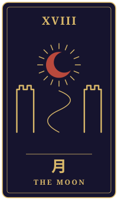
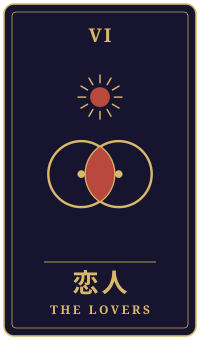
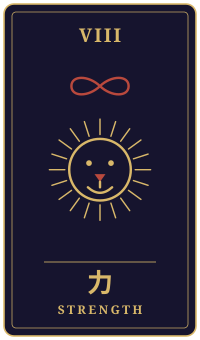

息継ぎ
物語の手前に、ひとつの相談がありました。三枚のタロットをめぐるやりとりを、聞こえたままに書き留めています。
持ち込まれた相談
三十歳、介護の仕事をしています。祖母の家で育ち、演歌を子守唄代わりに聞いてきました。二十代は歌手を目指して、先生の所へ通いながら地方の大会を回りましたが、芽が出ず諦めました。今は施設で歌の時間を受け持っていて、皆さんが手拍子をくれるのが一番の楽しみです。先日、昔の先生から「もう一曲だけ書くから、もう一度やらないか」と電話がありました。付き合っている人とは結婚の話も出ています。今日、紅白の男性側に演歌の人がいないと聞いて、やっぱり時代は終わったんだと思った半面、悔しくて胸が熱くなりました。未練なのか、本当にやりたいのか、自分でも分かりません。どう向き合えばいいでしょうか。
タロットの読み解き

過去
月・逆位置
月の逆位置は、霧が晴れて、それまで見えなかったものが見えてくる合図とされています。祖母の家で演歌を聞いて育ったこと、夢を追って地方を回った日々、その一つひとつが今のあなたの胸の熱さにつながっているのでしょう。長く続いていた迷いの霧が、少しずつ薄れ始めているのかもしれませんね。

現在
恋人・正位置
恋人の正位置は、選択と調和を示すカードです。先生からの電話と、大切な人との結婚の話。二つの道が同時に目の前にあって、どちらを選ぶかで心が揺れているのでしょう。ただ、このカードが示すのは、どちらかを切り捨てることだけではありません。自分の心と響き合う道を選ぶ、という静かな問いかけでもあるのだと思います。

未来
力・正位置
力の正位置は、内なる強さと忍耐、そして優しい勇気を表します。大きく踏み出すことだけが勇気ではなく、今の仕事の中で手拍子をくれる人たちを大切にしながら、もう一度自分の声と向き合ってみる。そんなゆっくりした歩みも、このカードは支えてくれるように感じます。
最後に
紅白に演歌の人がいないと知って、悔しさで胸が熱くなったこと。それは未練だけでなく、あなたの中で歌がまだ生きている証なのかもしれません。すぐに答えを出す必要はありません。まずは先生に、今の自分の思いを正直に話してみてはどうでしょう。本当にやりたいのかどうかは、歌ったあとの心の軽さや重さで見えてくることがあります。 結婚や仕事に関わる大きな決断は、ご自身とお相手、必要であれば信頼できる専門家とも話し合いながら、ゆっくり進めてくださいね。
帰り際の問い抑え込んでいる衝動と、どう向き合うのか。
読み解きは、タロット占い「月夜のアルカナ」が、この相談と引かれた三枚から返したものです。小説は同じ三枚を、別の角度から描いています。相談者は物語のための架空の人物です。相談文・読み解き・短編本文は、いずれも生成AIを使って制作しています。
物語に戻る